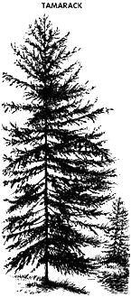

Jack pine (Pinus banksiana Lamb.)
|
The wood is light brown in colour,
has medium strength and hardness characteristics, and machines
and finishes well. Pine is used for pulp and paper, newsprint,
lumber and fuelwood, and for treated wood products such as railway
ties, posts and poles. Jack pine is the most common conifer found
in Saskatchewan and is a popular brand for Christmas trees. Traditional Native Uses
|
Balsam fir (Abies balsamea (L.) Mill.)
|
Balsam fir is similar to spruce in most
physical characteristics, although fir is less resilient and has
lower strength properties than spruce. Balsam fir is used for
many of the same purposes as spruce and is graded and marketed
in the species grouping spruce-pine-fir. Balsam fir makes a good
Christmas tree.
|
Tamarack or larch (Larix laricina (Du Roi) K. Koch)
|  |
Tamarack is not
in great demand, partly because of its limited availability. The
wood is moderately hard and heavy, is somewhat oily, and tends
to have a spiral grain that makes it undesirable for most lumber
uses. Nevertheless, its strength, durability and moderate resistance
to decay, make it well suited to use as floor planking, building
skids, pilings, posts and poles.
Traditional Native Uses
|
Lodgepole pine (Pinus contorta Dougl.)
|
Lodgepole pine wood is almost white and is soft
and straight-grained, and exhibits a fine uniform texture. The
wood is of medium strength, seasons readily, takes a good finish,
and yields a good grade of small, tight-knotted lumber similar
to that of jack pine. It is used for pulp and paper, lumber and
fuelwood; when treated it is used for railway ties, posts and
poles. In Saskatchewan, lodgepole pine is found only in the Cypress
Hills area in the southwestern part of the province, which is
its most easterly range in Canada.
Traditional Native Uses
|
White and black spruce (Picea glauca (Moench) Voss and Picea mariana (Mill.) B.S.P.)
|
White and black spruce are nearly indistinguishable in their wood structure.
The wood is light coloured, has low weight when dried, is soft,
resilient and straight-grained, and has good machining properties.
Both species are in great demand for pulp, paper and newsprint
manufacturing because of their long fibres and low resin content.
The wood is highly valued for plywood and lumber, which is used
in all forms of building construction and general millwork. Spruce
is both Saskatchewan's and Canada's most important wood species
in terms of volume harvested.
Traditional Native Uses
|